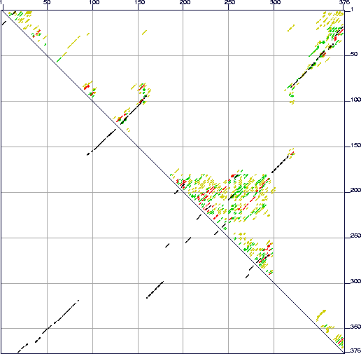

Next: Future plans
Up: Sample foldings
Previous: EXAMPLE 2
Here we present some results from the folding of an RNA that is
related to a Human adenovirus pre-terminal protein (U52533). This RNA
exhibits both ``well-defined'' and ``poorly-defined'' folding regions,
as shown in Figure 17. A total of 7 foldings were computed
using the default parameters.
Figure 17:
The energy dot plot for the ``Example 3'' sequence, with  = -196.3 kcal/mole
and
= -196.3 kcal/mole
and
 = 9.8 kcal.mole. The region from bases 180 to 295 shows a
great deal of uncertainty in its folding. This may be interpreted as a
large ensemble of different foldings, or simply an ``unstructured''
region. In contrast, the long stem pairing bases 160-178 with 316-298,
respectively, is extremely well determined. Also well-determined is a
stem loop region that stretches from 37-81 and 322-365.
= 9.8 kcal.mole. The region from bases 180 to 295 shows a
great deal of uncertainty in its folding. This may be interpreted as a
large ensemble of different foldings, or simply an ``unstructured''
region. In contrast, the long stem pairing bases 160-178 with 316-298,
respectively, is extremely well determined. Also well-determined is a
stem loop region that stretches from 37-81 and 322-365.
|  |
 | Michael Zuker
Institute for Biomedical Computing
Washington University in St. Louis
1998-12-05 |